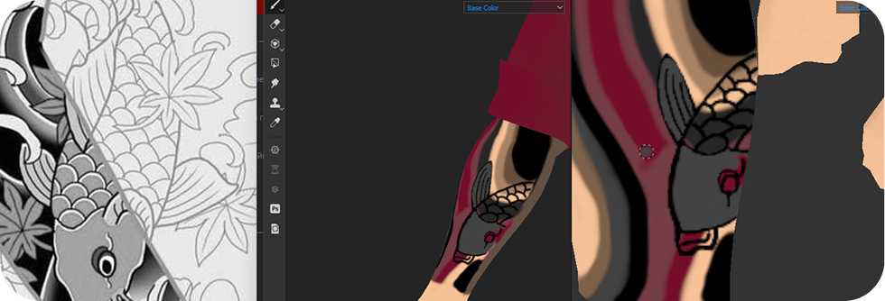
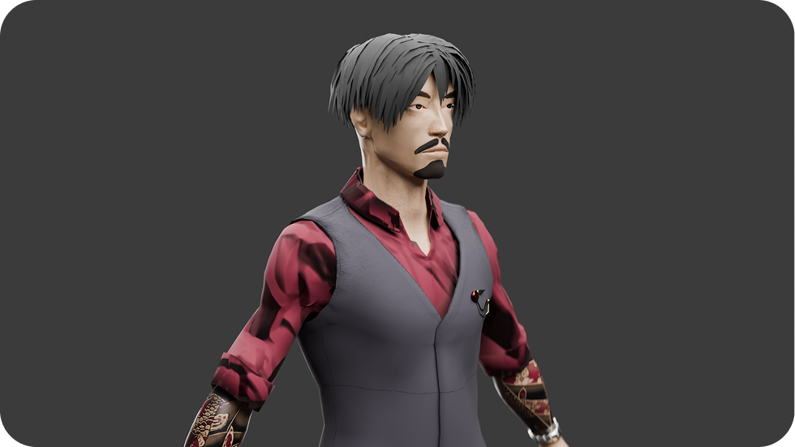

Сёджи
game-ready модель для игры Sifu
Substance
Painter, Unreal
Engine 4
Синопсис
Персонажа зовут Ямато Кагэяма, в узких кругах - Сёджи.
Он – молодой мужчина, возраст 26 лет. Ямато – член одного из японских подразделений Якудза.
Сёджи получает задание от своего босса — доставить важный груз в Японию из Индии.
Груз содержит секретные документы, которые могут изменить баланс сил между якудзой и конкурирующими в Азии синдикатами.
В доставке через воздушное сообщение ему должны были помочь двойные агенты, шпионы Якудзы в Триаде.
Во время полета поступило сообщение
о нестабильной турбулентности и вынужденной посадке в Гонконге для дозаправки. Как позже выяснится,
двойные агенты были разоблачены Триадой и для сохранения своих жизней они предали его.

Они были вынуждены предать Сёджи и Якудзу. Так он попал в лапы Триады. Оказавшись в плену Сёджи должен придумать план побега, вернуть секретный груз и доставить его любой ценой в Японию.
Разработка
Процесс разработки можно было рабить на следущие этапы
- Создание концепции персонажа
- Концепт-арт
- Скульптинг
- Текстурирование
- Риггинг и скинниг
- Интеграция в игру
Помимо этого, между этими этапами покорно ждут своего часа постоянные баги и прочие шалости.
Концепция персонажа крутилась в голове давно. Всегда хотелось создать персонажа, который одновременно и безумно крут, и при этом не стесняется брать с тебя твои не самые приятные качества. Внешность, история и дизайн персонажа - смесь культур, в основе которой японские видео-игры и анимация, а также гонконгские фильмы середины 90-ых.
После того как персонаж был придуман, а концепт-арт - нарисован, настало время скульптить. Игра Sifu по своей натуре не славится гипер-реалистичной графикой, поэтому этот процесс мне не доставил ничего, кроме удовольствия. Моделирование было поступательным, без особых сложностей и сюрпризов.
Далее настал процесс текстурирования. Дело неблагодарное и весьма энергозатратное! На обе татуировки персонажа ушло примерно 8 часов. Но на самом деле все было не так плохо, болванка буквально ожила под кисточками в Substance Painter’е.

Итог
Работа получилась на славу! Открыл для себя много нового, поглотил гигабайты знаний и сумел воплотить их во что-то неплохое и достойное.
